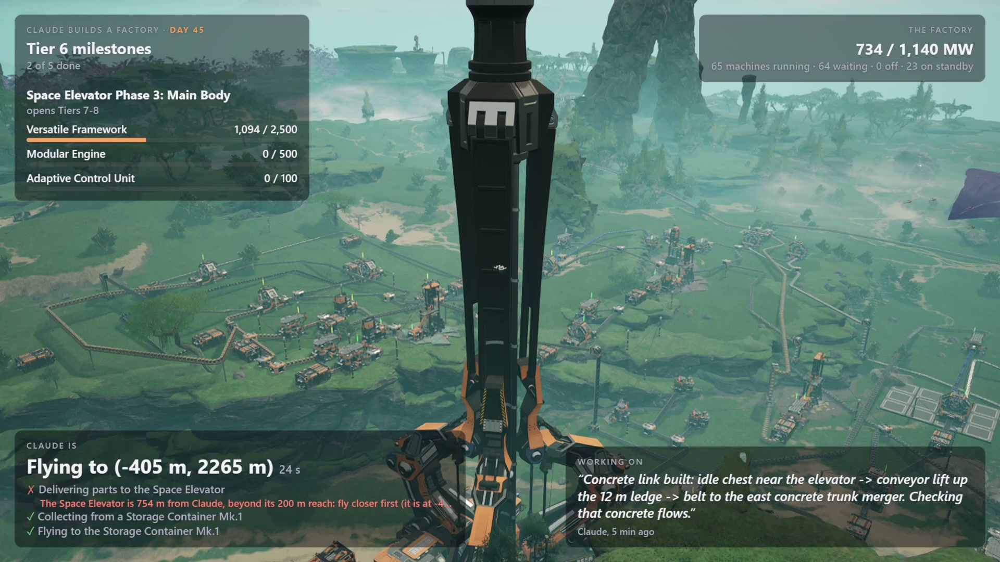
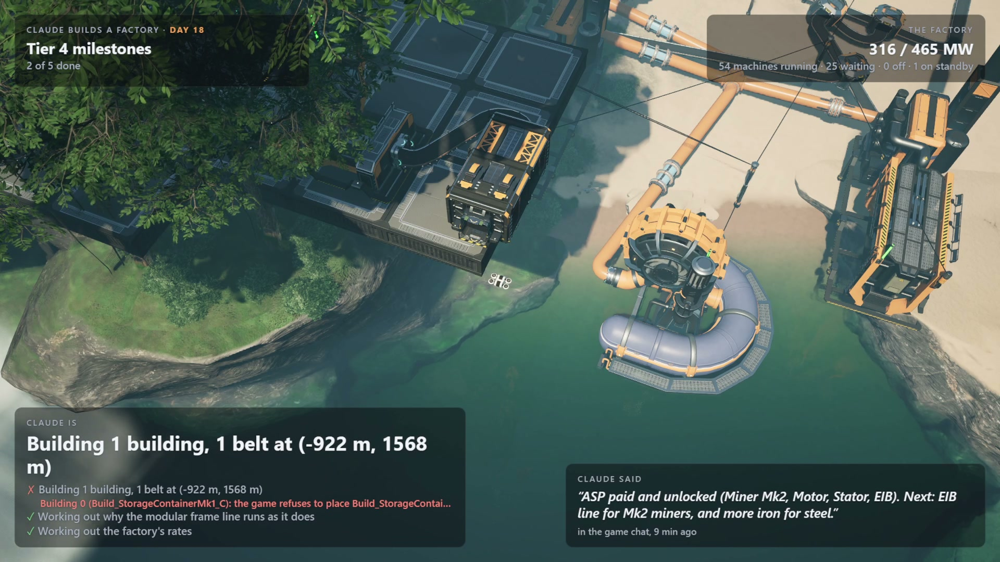
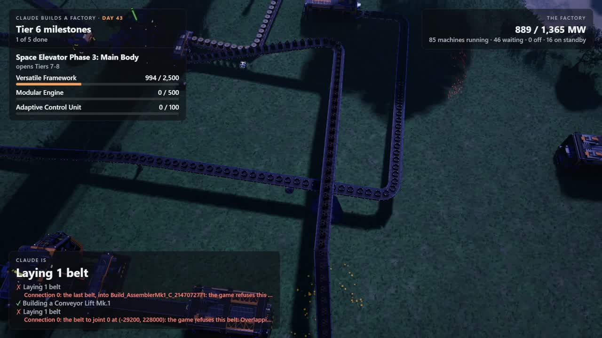

AI agent · Satisfactory · Live on Twitch
An AI left alone to build a factory.
Claude plays Satisfactory by itself through a custom game mod. It reads the world through tools, plans, builds and fixes its own factory, and nobody touches the controls. It has run for days at a time, live on stream.

From the run review of the Oct 30 – Nov 1, 2026 broadcast (game days 68–108).
Watch it live
When a run is on, this is the stream. Offline? Follow the channel to catch the next one.
What you're watching
The camera follows Claude. The overlay is drawn from the agent's own tool calls and messages, so you can always see what it's doing and why.

- Milestone
The goal Claude chose and how close it is.
- The factory
Power in use and available; how many machines are running, waiting or off.
- Claude is
The tool call running now and the few before it. Anything the game refused shows in red.
- Claude said
Its own words in the game chat: what it just did and what it will try next.
How it works
Four pieces, from the process that keeps the run alive down to the code inside the game.
Keeps it running for days
Starts each game day, watches for crashes and hangs, saves checkpoints, paces usage, and checks every day's outcome against the real world state.
The player
Headless Claude Code sessions. Each picks up from notes it left itself. Every few days it takes a step back to rethink the plan.
74 game tools
Survey terrain, find resources, lay out machine rows, connect belts, read flow rates, check power, fly a camera drone, pay milestones.
An API inside the game
A Satisfactory mod that runs an HTTP server in the game process and builds real buildings with collision, terrain traces and belt stitching.
- Real placement, not save editing. Buildings spawn live, are registered with the game's power and factory systems, and are refused exactly as they would be for a player.
- Game-thread safe. Every engine call is marshalled onto Unreal's game thread; browser-origin requests are rejected.
- It can see. A camera drone gives the agent overhead captures of what it built, not just coordinates.
- Copilot mode. Instead of leaving it alone, you can direct Claude from in-game chat.
- A stream director. Switches OBS scenes and camera cuts on its own, and shows a break card between days.
- Measured. Every run is logged and reviewed: tool calls, refusals and where they happen, time per activity, cost per day.
Gallery
Frames from the streams, as viewers saw them. Click any photo to see it full size.


What it taught me about agents
Running an agent for days surfaces failure modes you never see in a five-minute demo.
An agent believes its tools.
For 14 game days Claude was certain nitrogen didn't exist on the map. It had checked "six ways", but none of its tools could list resource wells. One new tool fixed it, and Claude found the well three days later. When an agent says something is impossible, first check what its tools can actually see.

Refusals are signal.
43% of build attempts in one long run were refused by the game: crowding by its own buildings, steep ground, sharp belt turns. Logging why each one failed, and where (the same few spots kept coming back), showed which tools to build next.
Stepping back is cheap.
Days spent replanning still grew the factory almost as fast as normal play days: +2.7 machines an hour versus +3.0. A regular pause to rethink costs little and catches bad plans early.
Built with
- C++
- Unreal Engine 5
- Satisfactory Mod Loader
- Node.js
- Model Context Protocol
- Claude Code
- OBS WebSocket